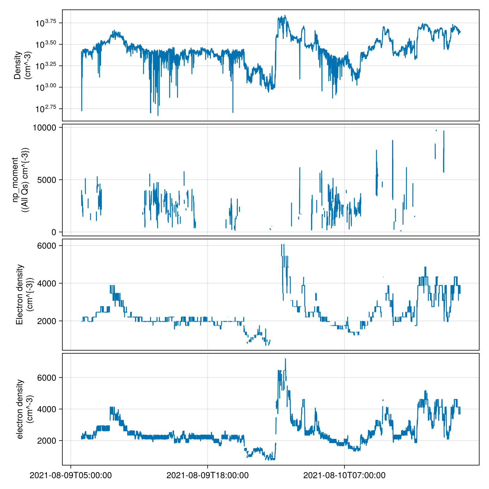
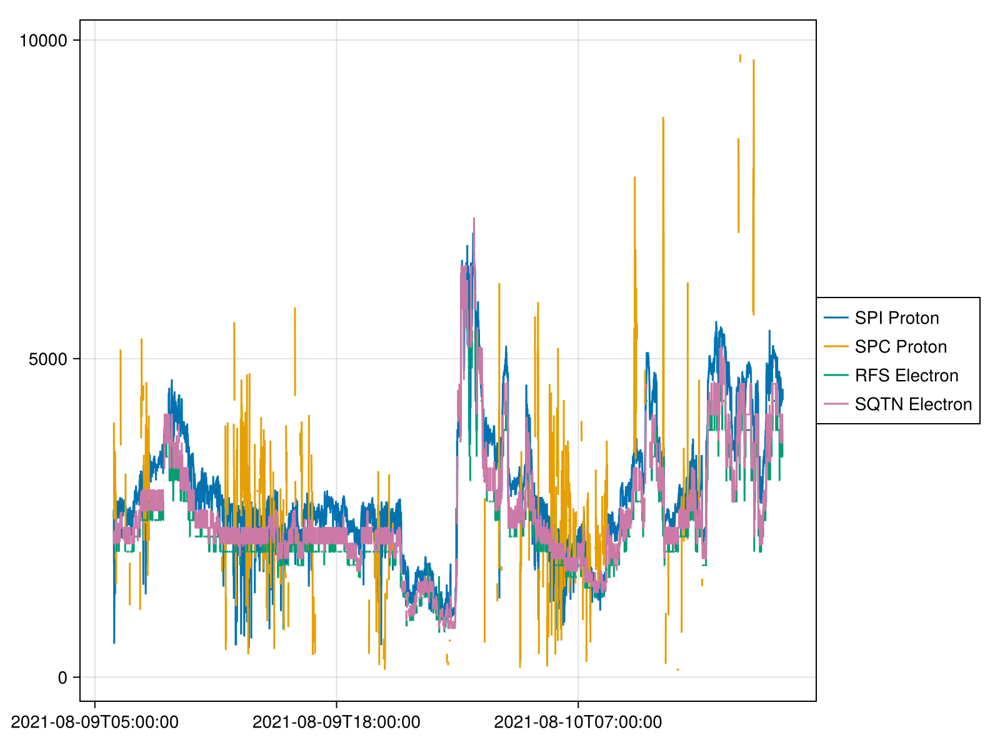

Parker Solar Probe (PSP)
SPEDAS.PSP — ModuleSub-module for "Parker Solar Probe (PSP)"
To load project, project-specific instrument and dataset variables into scope:
using SPEDAS.PSPConfiguration File: PSP.toml
SPEDAS.PSP.psp — ConstantProject: Parker Solar Probe
Instruments (Dict):
isois: Integrated Science Investigation of the Sun
fields: FIELDS
wispr: Wide-field Imager for Solar Probe
eis: Ephemeris
sweap: Solar Wind Electrons Alphas and Protons
Metadata (Dict):
abbreviation: PSP
links: ["https://hpde.io/SMWG/Observatory/ParkerSolarProbe.html", "[Wikipedia](https://en.wikipedia.org/wiki/Parker_Solar_Probe)"]
spase_id: spase://SMWG/Observatory/ParkerSolarProbeInstruments
SPEDAS.PSP.eis — ConstantInstrument: Ephemeris
Metadata (NoMetadata):
SpaceDataModel.NoMetadata()SPEDAS.PSP.fields — ConstantInstrument: FIELDS
Metadata (Dict):
spase_id: spase://SMWG/Instrument/ParkerSolarProbe/FIELDSSPEDAS.PSP.isois — ConstantInstrument: Integrated Science Investigation of the Sun
Metadata (NoMetadata):
SpaceDataModel.NoMetadata()SPEDAS.PSP.sweap — ConstantInstrument: Solar Wind Electrons Alphas and Protons
Metadata (NoMetadata):
SpaceDataModel.NoMetadata()SPEDAS.PSP.wispr — ConstantInstrument: Wide-field Imager for Solar Probe
Metadata (NoMetadata):
SpaceDataModel.NoMetadata()Datasets
Examples
using Speasy: SpeasyProduct
using SPEDAS
using CairoMakie, SpacePhysicsMakie
using Unitful
n = DataSet("Density",
[
SpeasyProduct("PSP_SWP_SPI_SF00_L3_MOM/DENS"; labels=["SPI Proton"]),
SpeasyProduct("PSP_SWP_SPC_L3I/np_moment"; labels=["SPC Proton"]),
SpeasyProduct("PSP_FLD_L3_RFS_LFR_QTN/N_elec"; labels=["RFS Electron"]),
SpeasyProduct("PSP_FLD_L3_SQTN_RFS_V1V2/electron_density"; labels=["SQTN Electron"])
]
)DataSet: Density
Data (Array{Product{String, typeof(Speasy.get_data), Dict{Symbol, Vector{String}}}, 1}):
1: cda/PSP_SWP_SPI_SF00_L3_MOM/DENS [get_data]
2: cda/PSP_SWP_SPC_L3I/np_moment [get_data]
3: cda/PSP_FLD_L3_RFS_LFR_QTN/N_elec [get_data]
4: cda/PSP_FLD_L3_SQTN_RFS_V1V2/electron_density [get_data]
Metadata (NoMetadata):
SpaceDataModel.NoMetadata()tplot(n, "2021-08-09T06", "2021-08-10T18")
# Overlay multiple datasets in the same panel
tplot([n], "2021-08-09T06", "2021-08-10T18")